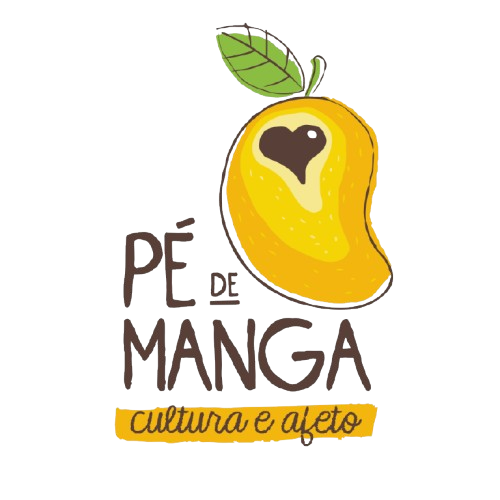

Integramos arte como prática de cuidado, sustentabilidade e transformação social em um território de pertencimento.

O Pé de Manga – Cultura e Afeto é um espaço dedicado à arte como caminho de cuidado e pertencimento. Atuamos na intersecção entre cultura, saúde mental e sustentabilidade.
Como Ponto de Cultura reconhecido, nosso compromisso é democratizar o acesso artístico e fortalecer os vínculos comunitários em Caçapava.
Veja como apoiarCamisetas exclusivas e pães artesanais. Cada compra gera impacto social.
Saiba como contribuir com doações, materiais ou trabalho voluntário.
Em breve: Eventos culturais e oficinas para toda a comunidade.